import matplotlib14 Fundamentals of Plotting with Matplotlib
Matplotlib is one of the most widely used libraries for creating visualizations in Python. While it’s more low-level than the plotting tools you used with Pandas, it gives you much more control over how your charts look and behave.
In fact, many other visualization libraries—like Pandas, Seaborn, and Altair—are built on top of Matplotlib. So, by learning the basics of Matplotlib, you’re building a strong foundation that will transfer to many other tools in the Python ecosystem.
In this chapter, you’ll get hands-on experience with Matplotlib and learn how to create and customize common plot types from scratch. By the end of this lesson you will be able to:
- Manipulate Matplotlib’s Figure and Axes.
- Create a variety of plots such as line, scatter, box plots and more.
- Combine multiple plots into one overall figure.
Note📓 Follow Along in Colab!
As you read through this chapter, we encourage you to follow along using the companion notebook in Google Colab (or other editor of choice). This interactive notebook lets you run code examples covered in the chapter—and experiment with your own ideas.
👉 Open the Matplotlib Data Viz Notebook in Colab.
14.1 Anatomy of a Figure
There is a hierarchy you must understand when plotting with Matplotlib. The highest and outermost part of a plot is the Figure. The Figure contains all the other plotting elements. Typically, you do not interact with it much. Inside the Figure is the Axes. This is the actual plotting surface that you normally would refer to as a ‘plot’.
A Figure may contain any number of these Axes. The Axes is a container for all of the other physical pixels that get drawn onto your screen. This includes the x and y axis, lines, text, points, legends, images, etc.

Within Matplotlib the term Axes is not actually plural and does not mean more than one axis. It literally stands for a single ‘plot’. It’s unfortunate that this fundamental element has a name that is so confusing.
14.2 Importing the pyplot module
Importing matplotlib into your workspace is done a little differently than NumPy or Pandas. You rarely will import matplotlib itself directly like this:
The above is perfectly valid code, but the matplotlib developers decided not to put all the main functionality in the top level module.
When you import pandas as pd, you get access to nearly all of the available functions and classes of the Pandas library. This isn’t true with Matplotlib. Instead, much of the functionality for quickly plotting is found in the pyplot module. If you navigate to the matplotlib source directory, found in your site-packages directory, you will see a pyplot.py file. This is the module that you are importing into your workspace.
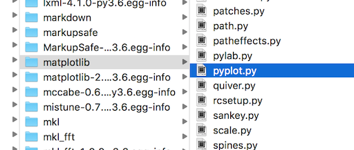
There is some functionality in other matplotlib submodules; however, vast majority of what you will use starting out is isolated to the pyplot submodule.
Let’s import the pyplot module now and alias it as plt, which is commonly done by convention:
import matplotlib.pyplot as plt14.3 Figures and axes
pyplot does provide lots of useful functions, one of which creates a Figure and any number of Axes that you desire. You can do this without pyplot, but it involves more syntax. It’s also quite standard to begin the object-oriented approach by laying out your Figure and Axes first with pyplot and then proceed by calling methods from these objects.
The pyplot subplots() function creates a single Figure and any number of Axes. If you call it with the default parameters it will create a single Axes within a Figure.
The subplots function returns a two-item tuple containing the Figure and the Axes. Recall from our earlier lesson where we learned about tuples that we can unpack each of these objects as their own variable.
fig, ax = plt.subplots()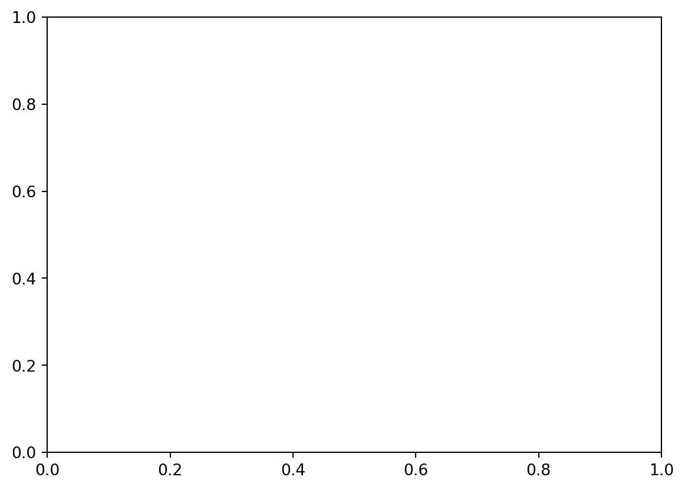
Let’s verify that we indeed have a Figure and Axes.
type(fig)matplotlib.figure.Figuretype(ax)matplotlib.axes._axes.AxesDistinguishing the Figure from the Axes
It’s not obvious, from looking at the plot which part is the Figure and which is the Axes. We will call our first method, set_facecolor in an object-oriented fashion from both the Figure and Axes objects. We pass it a name of a color (more on colors later).
# set figure and axes colors
fig.set_facecolor('skyblue')
ax.set_facecolor('sandybrown')
# show result
fig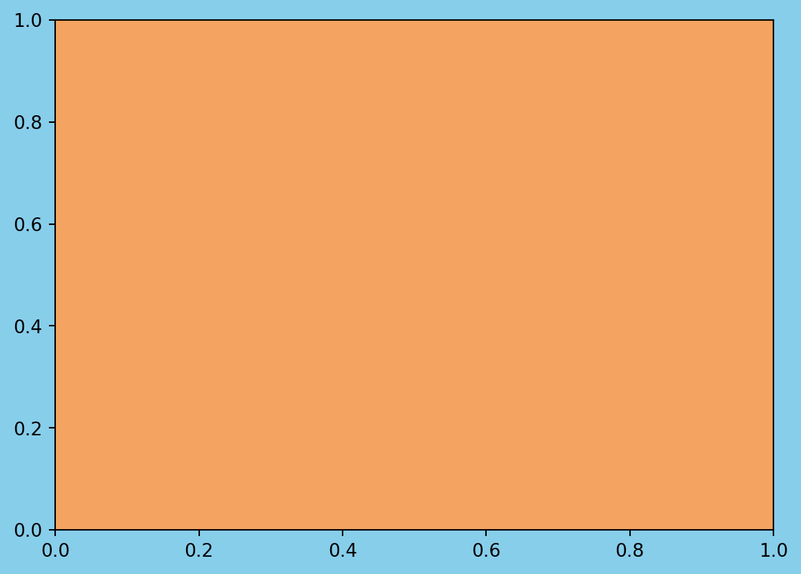
Notice, that the two calls above to the set_facecolor method were made without an assignment statement. Both of these operations happened in-place. The calling Figure and Axes objects were updated without a new one getting created.
Setting the size of the Figure upon creation
The default Figure is fairly small. We can change this when creating it with the figsize parameter. Pass a two-item tuple to configure the height and width of the figure as we did in the previous lesson with Pandas plotting. By default, these dimensions are 6 by 4. They represent inches and are literally the inches that your figure would be if you printed out on paper.
Below, we create a new Figure that is 8 inches in width by 4 inches in height. We also color the faces of the both the Figure and Axes again.
fig, ax = plt.subplots(figsize=(8, 4))
fig.set_facecolor('skyblue')
ax.set_facecolor('sandybrown')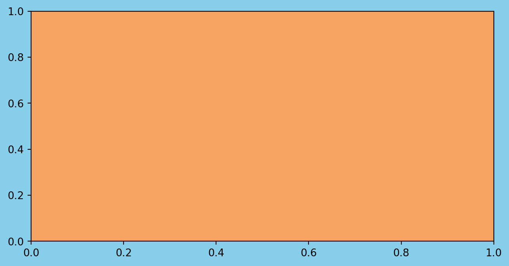
Everything on our plot is a separate object. Each of these objects may be explicitly referenced by a variable. Once we have a reference to a particular object, we can then modify it by calling methods on it.
Thus far we have two references, fig and ax. There are many other objects on our Axes that we can reference such as the x and y axis, tick marks, tick labels, and others. We do not yet have references to these objects.
Calling Axes methods - get_ and set_ methods
Before we start referencing these other objects, let’s change some of the properties of our Axes by calling some methods on it. Many methods begin with either get_ or set_ followed by the part of the Axes that will get retrieved or modified. The following list shows several of the most common properties that can be set on our Axes. We will see examples of each one below.
- title
- xlabel/ylabel
- xlim/ylim
- xticks/yticks
- xticklabels/yticklabels
Getting and setting the title of the Axes
The get_title method will return the title of the Axes as a string. There is no title at this moment so it returns an empty string.
ax.get_title()''The set_title method will place a centered title on our Axes when passing it a string. Notice that a matplotlib Text object has been returned. More on this later.
ax.set_title('My First Matplotlib Graph')Text(0.5, 1.0, 'My First Matplotlib Graph')Again, we must place our Figure variable name as the last line in our cell to show it in our notebook.
fig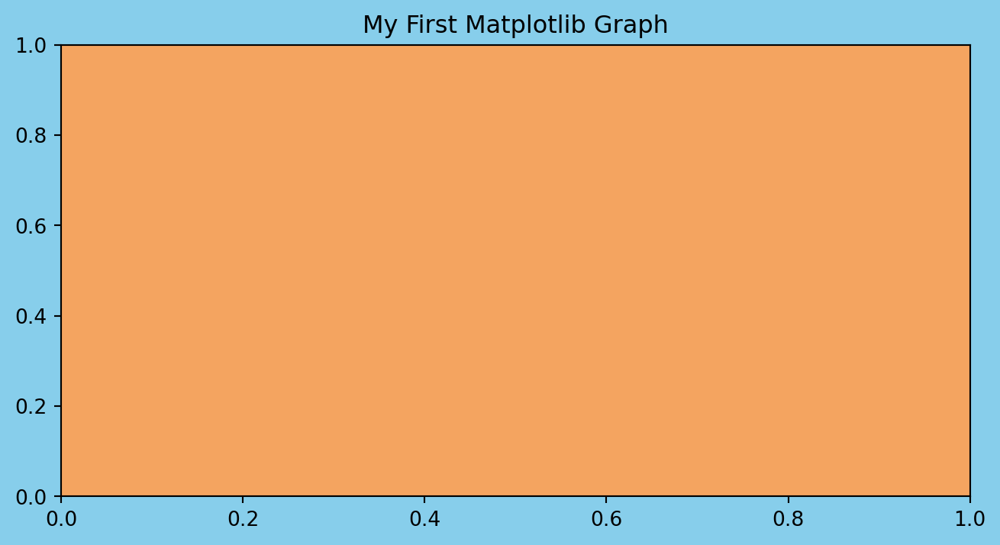
Now, if we run the get_title method again, we will get the string that was used as the title.
ax.get_title()'My First Matplotlib Graph'Getting and setting the x and y limits
By default, the limits of both the x and y axis are 0 to 1. We can change this with the set_xlim and set_ylim methods. Pass these methods a new left and right boundary to change the limits. These methods actually return a tuple of the limits.
ax.get_xlim()(np.float64(0.0), np.float64(1.0))ax.get_ylim()(np.float64(0.0), np.float64(1.0))ax.set_xlim(0, 5)
ax.set_ylim(-10, 50)
fig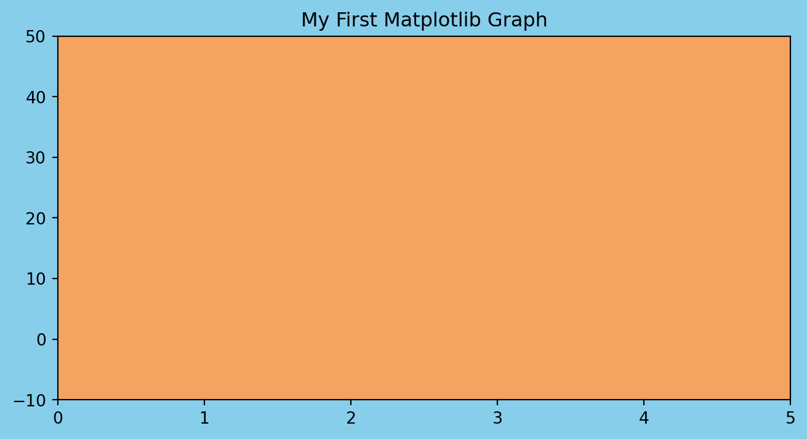
Notice, that the size of the figure remains the same. Only the limits of the x and y axis have changed.
Getting and setting the location of the x and y ticks
In the graph above, it has chosen to place ticks every 1 unit for the x and every 10 units for the y. Matplotlib chooses reasonable default values. Let’s see the location of these ticks with the get_xticks and get_yticks methods.
ax.get_xticks()array([0., 1., 2., 3., 4., 5.])ax.get_yticks()array([-10., 0., 10., 20., 30., 40., 50.])We can specify the exact location of the x and y ticks with the set_xticks and set_ticks methods. We pass them a list of numbers indicating where we want the ticks.
If we set the ticks outside of the current bounds of the axis, this forces matplotlib to change the limits. For example, below we set the lower bound ytick (-99) beyond the lower bound of the y-axis limit (-10).
ax.set_xticks([1.8, 3.99, 4.4])
ax.set_yticks([-99, -9, -1, 22, 44])
fig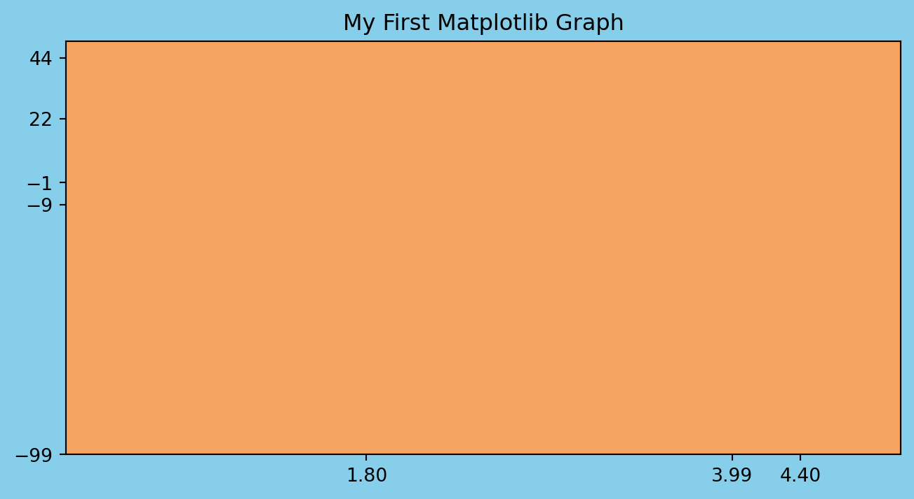
Getting and setting the x and y tick labels
The current tick labels for the x-axis and y-axis are the same as the tick locations. Let’s first view the current tick labels. The output displays a list of Text objects that contain Text(xaxis_location, yaxis_location, tick_label).
ax.get_xticklabels()[Text(1.8, 0, '1.80'), Text(3.99, 0, '3.99'), Text(4.4, 0, '4.40')]We can pass the set_xticklabels and set_yticklabels methods a list of strings to use as the new labels.
ax.set_xticklabels(['dog', 'cat', 'snake'])
ax.set_yticklabels(['Boehmke', 'D', 'A', 'R', 'B'])
fig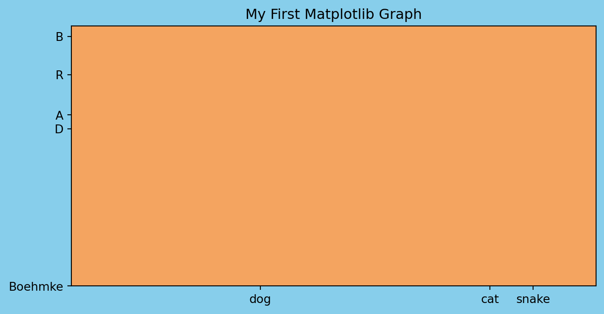
The tick locations are a completely separate concept than the tick labels. The tick locations are always numeric and determine where on the plot the tick mark will appear. The tick labels on the other hand are the strings that are used on the graph.
The tick labels are defaulted to be a string of the tick location, but you can set them to be any string you want, as we did above. But use this wisely otherwise you may lead viewers of your plots astray!
Setting text styles
All the text we placed on our plot was plain. We can add styling to it by changing the text properties. See the documentation for a list of all the text properties.
Common text properties:
size- Number in “points” where 1 point is defaulted to 1/72nd of an inchcolor- One of the named colors. See the colors API for more.backgroundcolor- Same as abovefontname- Name of font as a stringrotation- Degree of rotation
ax.set_title(
'Tests',
size=20,
color='firebrick',
backgroundcolor='steelblue',
fontname='Courier New',
rotation=70
)
figfindfont: Font family 'Courier New' not found.
findfont: Font family 'Courier New' not found.
findfont: Font family 'Courier New' not found.
findfont: Font family 'Courier New' not found.
findfont: Font family 'Courier New' not found.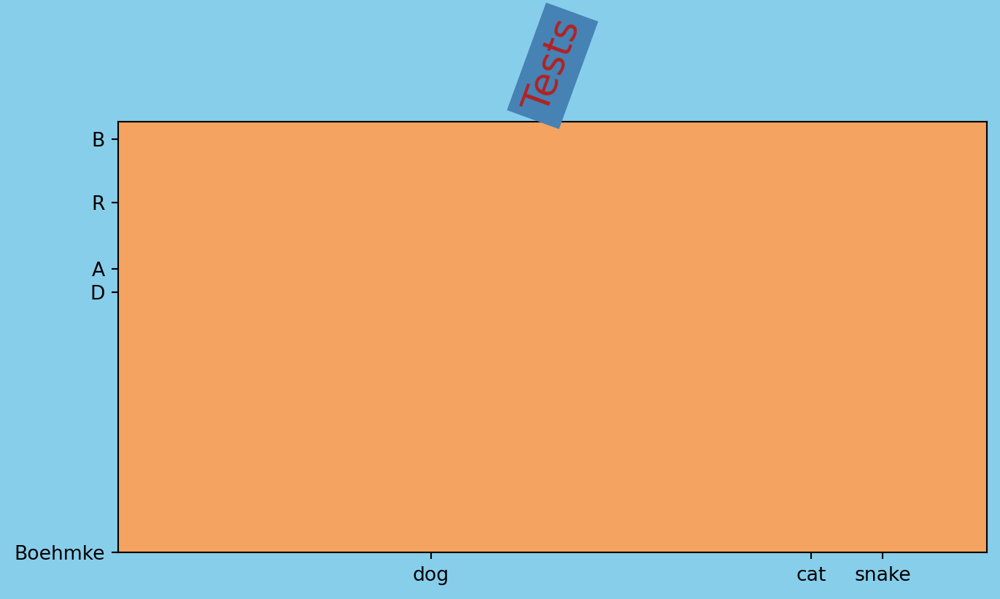
Any other text may be stylized with those same parameters. Below we do so with the x labels.
ax.set_xlabel(
'New and Imporved X-Axis Stylized Label',
size=15,
color='indigo',
fontname='Times New Roman',
rotation=15
)
figfindfont: Font family 'Courier New' not found.
findfont: Font family 'Courier New' not found.
findfont: Font family 'Times New Roman' not found.
findfont: Font family 'Times New Roman' not found.
findfont: Font family 'Courier New' not found.
findfont: Font family 'Courier New' not found.
findfont: Font family 'Times New Roman' not found.
findfont: Font family 'Times New Roman' not found.
findfont: Font family 'Times New Roman' not found.
findfont: Font family 'Courier New' not found.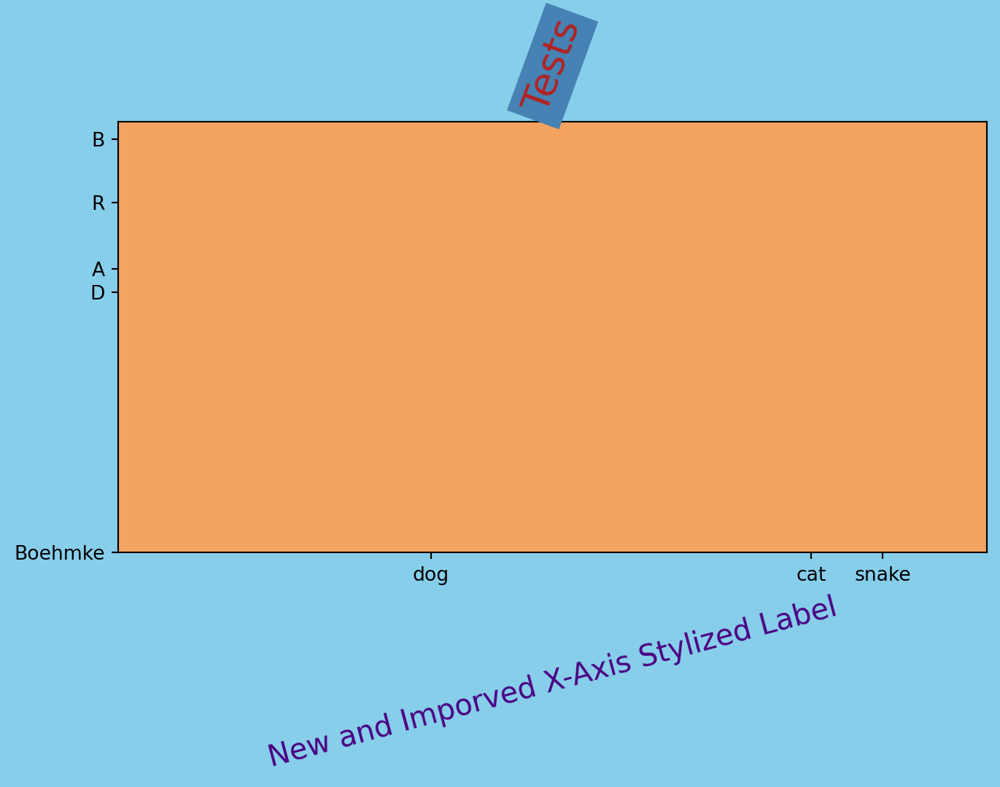
Knowledge check
NoteDo This!
Create a Figure with a single Axes. Modify the Axes by using all of the methods in this notebook.
title: set as your name and change the font size, color, and name.xlabel/ylabel: set as your two favorite colors.xlim/ylim: set x-axis to be 10-100 and y-axis to be -25-25xticks/yticks: set the xticks to be in increments of 10 and yticks to be in increments of 5.
14.4 Plotting Data
In previous section, we created Figure and Axes objects, and proceeded to change their properties without plotting any actual data. In this section, we will learn how to create some of the same plots that we created in the Plotting with Pandas lesson.
The matplotlib documentation has a nice layout of the Axes API. There are around 300 different calls you make with an Axes object. The API page categorizes and groups each method by its functionality. The first third (approximately) of the categories in the API are used to create plots.
The simplest and most common plots are found in the Basics category and include plot, scatter, bar, pie, and others.
Let’s go ahead and import Pandas along with our Complete Journey data:
import pandas as pd
from completejourney_py import get_data
cj_data = get_data()
df = (
cj_data['transactions']
.merge(cj_data['products'], how='inner', on='product_id')
.merge(cj_data['demographics'], how='inner', on='household_id')
)
df.head()/opt/hostedtoolcache/Python/3.13.7/x64/lib/python3.13/site-packages/completejourney_py/get_data.py:2: UserWarning: pkg_resources is deprecated as an API. See https://setuptools.pypa.io/en/latest/pkg_resources.html. The pkg_resources package is slated for removal as early as 2025-11-30. Refrain from using this package or pin to Setuptools<81.
from pkg_resources import resource_filename| household_id | store_id | basket_id | product_id | quantity | sales_value | retail_disc | coupon_disc | coupon_match_disc | week | ... | product_category | product_type | package_size | age | income | home_ownership | marital_status | household_size | household_comp | kids_count | |
|---|---|---|---|---|---|---|---|---|---|---|---|---|---|---|---|---|---|---|---|---|---|
| 0 | 900 | 330 | 31198570044 | 1095275 | 1 | 0.50 | 0.00 | 0.0 | 0.0 | 1 | ... | ROLLS | ROLLS: BAGELS | 4 OZ | 35-44 | 35-49K | Homeowner | Married | 2 | 2 Adults No Kids | 0 |
| 1 | 900 | 330 | 31198570047 | 9878513 | 1 | 0.99 | 0.10 | 0.0 | 0.0 | 1 | ... | FACIAL TISS/DNR NAPKIN | FACIAL TISSUE & PAPER HANDKE | 85 CT | 35-44 | 35-49K | Homeowner | Married | 2 | 2 Adults No Kids | 0 |
| 2 | 1228 | 406 | 31198655051 | 1041453 | 1 | 1.43 | 0.15 | 0.0 | 0.0 | 1 | ... | BAG SNACKS | POTATO CHIPS | 11.5 OZ | 45-54 | 100-124K | None | Unmarried | 1 | 1 Adult No Kids | 0 |
| 3 | 906 | 319 | 31198705046 | 1020156 | 1 | 1.50 | 0.29 | 0.0 | 0.0 | 1 | ... | REFRGRATD DOUGH PRODUCTS | REFRIGERATED BAGELS | 17.1 OZ | 55-64 | Under 15K | Homeowner | Married | 2 | 1 Adult Kids | 1 |
| 4 | 906 | 319 | 31198705046 | 1053875 | 2 | 2.78 | 0.80 | 0.0 | 0.0 | 1 | ... | SEAFOOD - SHELF STABLE | TUNA | 5.0 OZ | 55-64 | Under 15K | Homeowner | Married | 2 | 1 Adult Kids | 1 |
5 rows × 24 columns
Line plots
The plot method’s primary purpose is to create line plots. It does have the ability to create scatter plots as well, but that task is best reserved for scatter. The plot method is very flexible and can take a variety of different inputs (i.e. lists, numpy arrays, Pandas Series) but our examples will focus on using Matplotlib with a DataFrame.
Let’s compute the total daily sales and create a line plot:
daily_sales = (
df
.set_index('transaction_timestamp')['sales_value']
.resample('D')
.sum()
.to_frame()
.reset_index()
)
daily_sales.head()| transaction_timestamp | sales_value | |
|---|---|---|
| 0 | 2017-01-01 | 4604.39 |
| 1 | 2017-01-02 | 6488.94 |
| 2 | 2017-01-03 | 6856.84 |
| 3 | 2017-01-04 | 7087.92 |
| 4 | 2017-01-05 | 6894.67 |
fig, ax = plt.subplots(figsize=(10, 4))
ax.plot('transaction_timestamp', 'sales_value', data=daily_sales);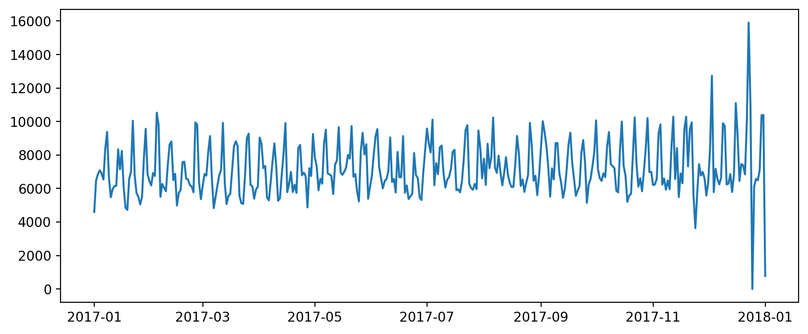
We can change several properties of this plot. For example, we can change the line style and color of our line directly in the ax.plot call along with adding plot a
fig, ax = plt.subplots(figsize=(10, 4))
# create/modify line plot
ax.plot(
'transaction_timestamp',
'sales_value',
data=daily_sales,
linestyle=':',
color='gray',
linewidth=2
)
# add additional context
ax.set_title('Total daily sales across all stores', size=20)
ax.set_ylabel('Total sales ($)');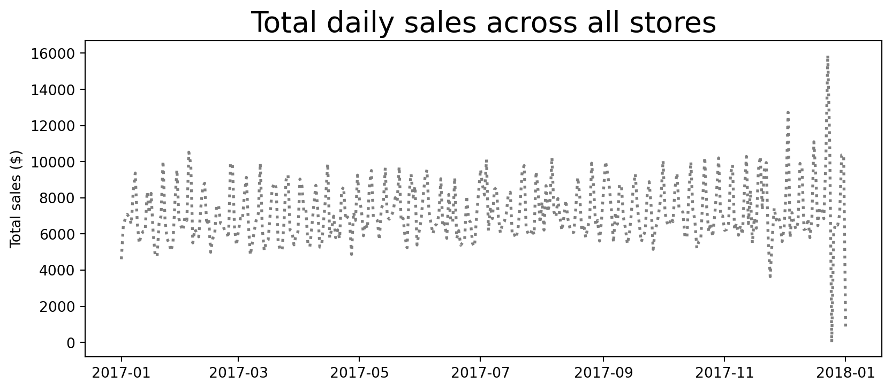
We can even add additional features such as gridlines and text/arrows to call out certain parts of the plot.
Since our x-axis is a date object we need to specify a date location within ax.annotate. The datetime module comes as part of the Standard Library and is the defacto approach to creating and manipulating dates and times outside of Pandas.
from datetime import date as dt
fig, ax = plt.subplots(figsize=(10, 4))
# create/modify line plot
ax.plot(
'transaction_timestamp',
'sales_value',
data=daily_sales,
linestyle=':',
color='gray',
linewidth=2
)
# add additional context
ax.set_title('Total daily sales across all stores', size=20)
ax.set_ylabel('Total sales ($)');
# add gridlines, arrow, and text
ax.grid(linestyle='dashed')
ax.annotate(
'Christmas Eve',
xy=([dt(2017, 12, 20), 15900]),
xytext=([dt(2017, 9, 1), 15500]),
arrowprops={'color':'blue', 'width':2},
size=10
);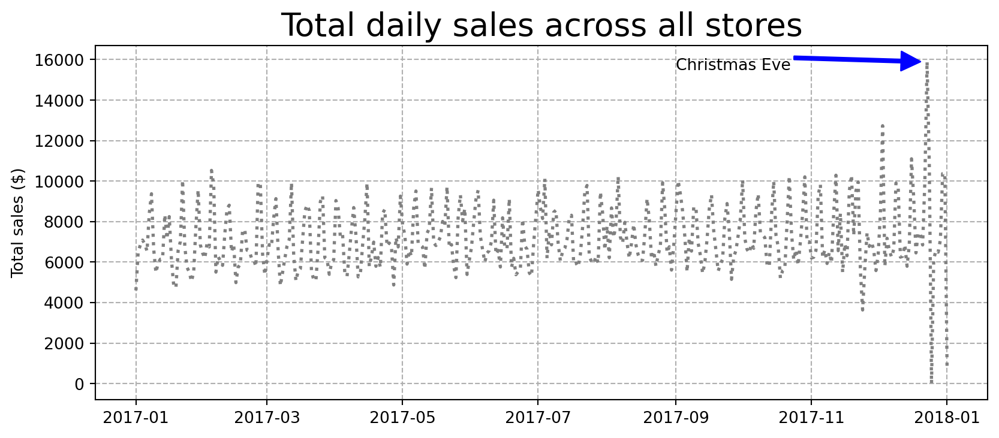
Other plots
We can create many of the other forms of plots that we saw in the previous lesson. The following are just a few examples that recreate the histogram, boxplot, and scatter plots that we made in Chapter 13.
totals_by_store = df.groupby('store_id').agg({'sales_value': 'sum', 'quantity': 'sum'})
# histogram
fig, ax = plt.subplots(figsize=(8, 4))
ax.hist('sales_value', data=totals_by_store, bins=30);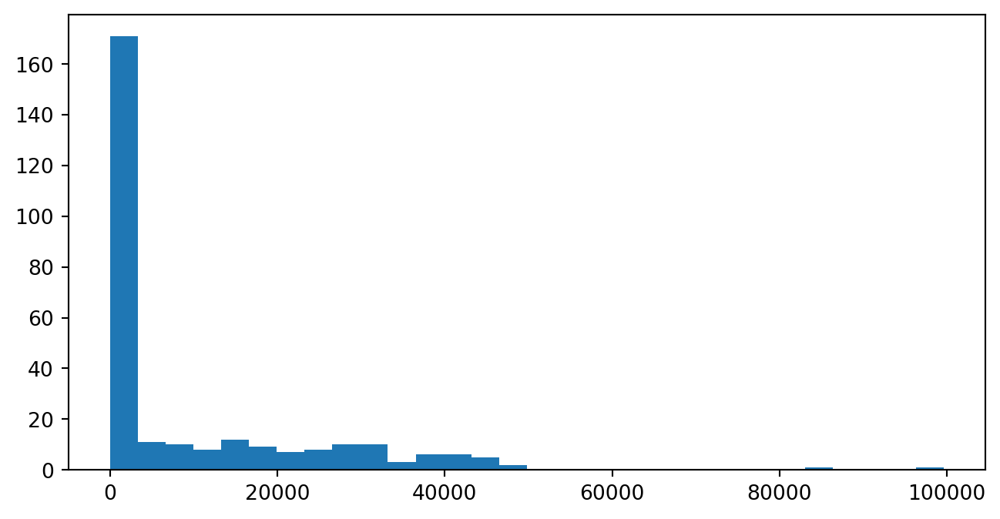
# boxplot
fig, ax = plt.subplots(figsize=(8, 4))
ax.boxplot('sales_value', data=totals_by_store, vert=False)
# adjust axes
ax.set_xscale('log')
ax.set_yticklabels('')
ax.set_yticks([]);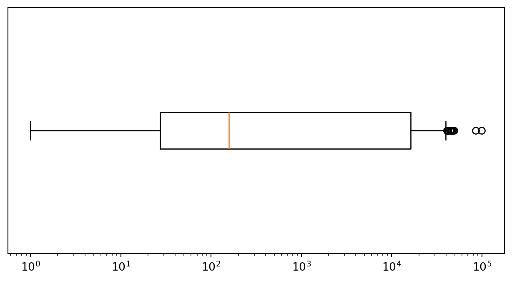
# scatter plot
fig, ax = plt.subplots(figsize=(8, 4))
ax.scatter('quantity', 'sales_value', data=totals_by_store, c='gray', s=5);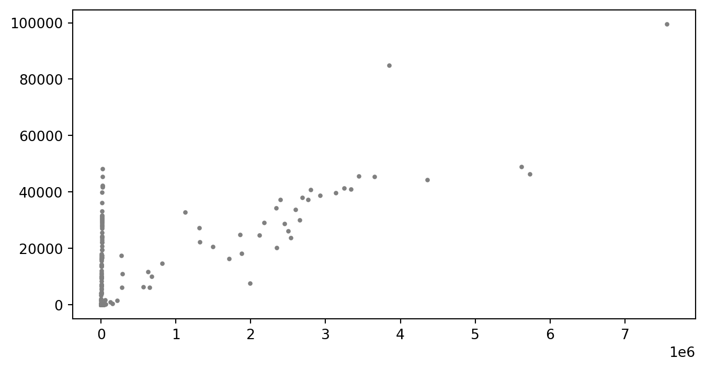
Adding more dimensions
In some cases we can even add additional dimensions to our data. For example, say we have the following data set that has total quantity and sales_value plus a third variable that indicates the number of transactions for each store.
store_count = (
df
.groupby('store_id', as_index=False)
.size()
.rename(columns={'size': 'n'})
)
totals_by_store = (
df
.groupby('store_id', as_index=False)
.agg({'sales_value': 'sum', 'quantity': 'sum'})
.merge(store_count)
)
totals_by_store.head()| store_id | sales_value | quantity | n | |
|---|---|---|---|---|
| 0 | 2 | 13.99 | 1 | 1 |
| 1 | 27 | 443.97 | 186 | 150 |
| 2 | 37 | 7.27 | 3 | 3 |
| 3 | 42 | 22.78 | 7 | 7 |
| 4 | 45 | 13.01 | 9 | 8 |
We can actually have the color (c) and size (s) of our points based on data. For example, here we create a Series that is based on the number of store observations and another Series to indicate if the store count was greater than the 95 percentile.
We could literally use s='n' to reference our count column within the DataFrame; however, since there is such a wide dispersion of count values the size of the points explode. Here, we adjust the dispersion to be smaller with a fractional exponentiation.
size_adj = totals_by_store['n']**0.4
n_outliers = totals_by_store['n'] > totals_by_store['n'].quantile(0.95)
fig, ax = plt.subplots(figsize=(8, 4))
ax.scatter('quantity', 'sales_value', data=totals_by_store, c=n_outliers, s=size_adj);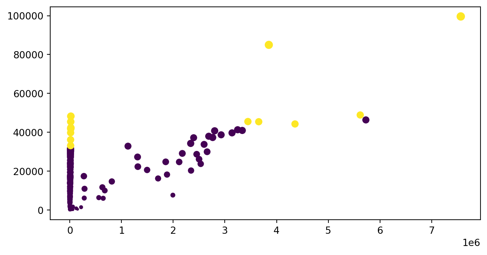
Multiple plots
We can create multiple plots (“Axes”) within our figure. For example, the following will create 4 plots (2 rows x 2 colums).
fig, ax_array = plt.subplots(2, 2, figsize=(8, 6), constrained_layout=True)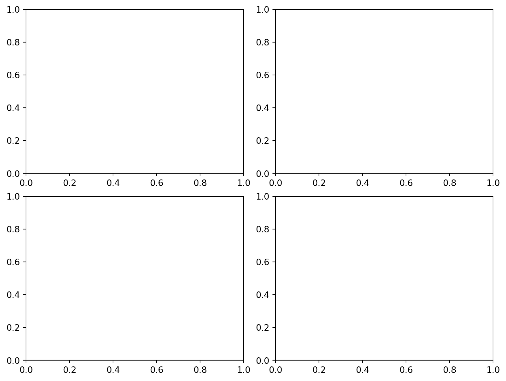
Whenever you create multiple Axes on a figure with subplots, you will be returned a NumPy array of Axes objects. Let’s verify that the type and shape of this array.
type(ax_array)numpy.ndarrayax_array.shape(2, 2)If we simply output the array, we will see 4 different Axes objects. Let’s extract each of these Axes into their own variable. We need to index for both the row and column to get the respective plot (remember that we need to use zero-based indexing!)
ax_arrayarray([[<Axes: >, <Axes: >],
[<Axes: >, <Axes: >]], dtype=object)ax1 = ax_array[0, 0] # row 0, col 0
ax2 = ax_array[0, 1] # row 0, col 1
ax3 = ax_array[1, 0] # row 1, col 0
ax4 = ax_array[1, 1] # row 1, col 1We can now customize our individual plots:
# plot 1
ax1.plot(
'transaction_timestamp',
'sales_value',
data=daily_sales,
linestyle=':',
color='gray',
linewidth=2
)
# add additional context
ax1.set_title('Total daily sales across all stores', size=12)
ax1.set_ylabel('Total sales ($)');
# add gridlines, arrow, and text
ax1.grid(linestyle='dashed')
ax1.tick_params(axis='x', which='major', labelsize=8, labelrotation=45)
ax1.annotate(
'Christmas Eve',
xy=([dt(2017, 12, 20), 15900]),
xytext=([dt(2017, 7, 1), 15500]),
arrowprops={'color':'blue', 'width':0.5},
size=8
)
# plot 2
ax2.scatter('quantity', 'sales_value', data=totals_by_store, c=n_outliers, s=size_adj)
ax2.set_title('Total store-level sales vs quantity.', size=12)
# plot 3
ax3.hist('sales_value', data=totals_by_store, bins=30)
ax3.set_title('Histogram of total store-level sales.', size=12)
# plot 4
ax4.boxplot('quantity', data=totals_by_store, vert=False)
ax4.set_xscale('log')
ax4.set_yticklabels('')
ax4.set_yticks([])
ax4.set_title('Histogram of total store-level quantity.', size=12);
# final plot title
fig.suptitle('Total store-level sales and quantities (2017)', fontsize=20)
fig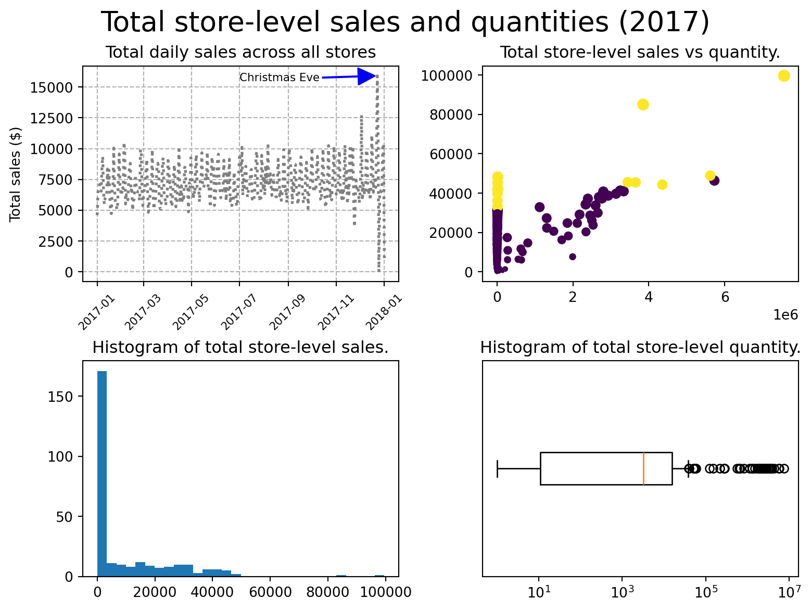
14.5 Video Tutorials
14.6 Summary
In this chapter, you explored the fundamentals of Matplotlib, Python’s core plotting library. While it may feel more manual compared to Pandas’ built-in plotting, understanding how Matplotlib works gives you the power to fully customize your visualizations—from titles and labels to tick marks, color schemes, and layout. This level of control is key to creating polished, professional-looking plots suitable for presentations, publications, and stakeholder reports.
By building your skills with Matplotlib, you’ve laid the groundwork for working with many other Python visualization libraries that use it under the hood.
In the next chapter, we’ll explore Bokeh, a more advanced library designed for creating interactive, web-ready visualizations. These tools allow you to move beyond static charts and into the world of dynamic dashboards and visual storytelling—ideal for engaging stakeholders and sharing results in more impactful ways.
14.7 Exercise: Customizing Pizza Visualizations with Matplotlib
In this exercise set, you’ll revisit the pizza-related analyses from the previous chapter. However, this time you’ll build the plots using Matplotlib directly, allowing you to practice creating visualizations from scratch and customizing them for improved clarity and presentation quality.
Use the datasets from the completejourney_py package and import Matplotlib as needed:
import matplotlib.pyplot as plt
import pandas as pd
from completejourney_py import get_data
cj_data = get_data()
df = (
cj_data['transactions']
.merge(cj_data['products'], how='inner', on='product_id')
.merge(cj_data['demographics'], how='inner', on='household_id')
)
Tip💡 Stuck or unsure how to do something?
Don’t hesitate to use AI tools like ChatGPT or GitHub Copilot to help you troubleshoot, format plots, or discover new ways to customize your charts. Part of learning data visualization is knowing how to find and adapt solutions.